Why Kryptographer?
Take a look at Kryptographer in action!
Competitive Edge
Kryptographer stands out from other AI-driven security tools by using adversarial machine learning that evolves in real time to defeat classifier models, providing stronger long-term resilience, future-proof protection against unknown AI attacks, and low operation overhead.
Global Impact
Kryptographer has the potential to save customers significant amounts of revenue that would be otherwise potentially lost from the leakage of trade secrets or the compromise of personal identities. It can foster a more secure environment on the internet, where the growing threat of AI traffic analysis by threat actors is mitigated. With the help of Kryptographer, we can create safety, security, and peace of mind for all of humankind.
Valuable Asset
The benefit compounds dramatically at scale: every protected device blocks a potential entry point, reducing the number of credentials stolen, networks compromised, and botnets built. With fewer successful breaches, ransomware groups lose operational leverage, malware spreads less efficiently, and criminals must spend more time and resources for less reward.
Behind the Scenes
Our product is multiplatform but is primarily meant for installation on Linux servers. Kryptographer is a kernel module, which is a special type of program that integrates deeply within the computer's operating system for high speed and low-level access to networking packets, which allows for more efficient packet operations compared to traditional userspace programs. It primarily extends the WireGuard VPN protocol, although it can be modified to support other VPN protocols. Kryptographer also provides userspace implementations for other operating systems.
How to Use

Run one command or click one button to generate rule sets for Kryptographer to use.
Bring up the VPN tunnel.
Kryptographer will automatically rewrite the packets according to these rule sets in real time.
Instead of using brittle, static rulesets to shape VPN-tunneled traffic or traffic mimicry, we employ adaptive, highly optimized adversarial machine learning to determine the most effective and minimally intrusive transformations on the fly, thereby shaping VPN traffic.
Additionallly, our product is not a new VPN; it is an extension that can be added and removed at any time. Customers only need to install another program on top of their existing solution; they don't have to replace their entire stack.